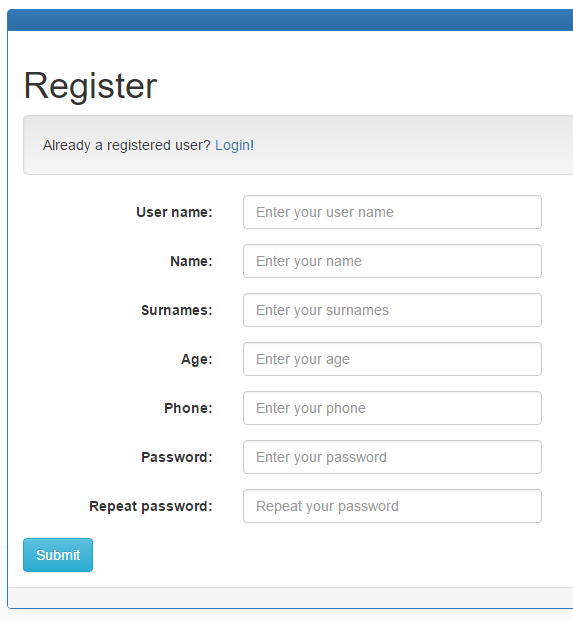

Ampliaciones
Descripción de las ampliaciones realizadas para multichat
Created by Liliana Villar Iglesias / Para ver la web pinche aquí
Ampliación I
Gestionar más datos de cada uno de los usuarios.
Primero paso
El primer paso es añadir los nuevos campos al modelo
Apellidos | Edad | Teléfono
var userSchema = new mongoose.Schema({
...
surnames: {
type: String,
required: true
},
age: {
type: Number,
required: true
},
phone: {
type: String,
required: true
},
...
});
Segundo paso
Modificamos el objeto que se almacena en sesión
userSchema.methods.generateJwt = function() {
var payload = {
sub: {
_id: this._id,
userName: this.userName,
name: this.name,
surnames: this.surnames,
age: this.age,
phone: this.phone
},
iat: moment().unix(),
exp: moment().add(14, "days").unix()
};
return jwt.encode(payload, process.env.JWT_SECRET);
};
Tercer paso
Incluimos en el controlador encargado del registro de usuarios los nuevos datos
module.exports.register = function(req, res) {
if(... || !req.body.surnames || !req.body.age || !req.body.phone) {
utils.sendJSONresponse(res, 400, { "message": "All fields required" });
return;
}
var user = new User();
...
user.surnames = req.body.surnames;
user.age = req.body.age;
user.phone = req.body.phone;
user.save(function(err) {
...
}
}
Cuarto paso
Puesto que queremos que esta información también pueda ser modificada, debemos modificar el controlador encargado de la edición del perfil.
module.exports.profile = function(req, res) {
...
else if (docs.length > 0) {
var user = docs[0]; //user exists
...
if (req.body.surnames != user.surnames)
user.surnames = req.body.surnames;
if (req.body.age != user.age)
user.age = req.body.age;
if (req.body.phone != user.phone)
user.phone = req.body.phone;
User.update({userName: req.body.userName}, user, function(err) {
...
});
...
})
};
Quinto paso
El último paso de modificar tanto la vista del registro como la de perfil de usuario para incluir los nuevos campos, así como realizar las validaciones
La edad es un input de tipo number con valores mínimos y máximos
input.form-control(type='number' id='age' name='age'
placeholder='#{lang.ageEnter}' ng-model="register.age"
required ng-minlength='2' ng-maxlength='2'
min='18' max='99')
Para validar el teléfono se ha utiliado una expresión regular
input.form-control(type='text' id='phone' name='phone'
placeholder='#{lang.phoneEnter}' ng-model="register.phone"
required ng-minlength='9' ng-maxlength='9' ng-pattern="/^[0-9]*$/")
Ampliación I : Resultado
Ampliación III
Adiciones a la funcion del dibujo corporativo.
Ampliación III
A continuación, se mostrarán los pasos a seguir para implementar los siguientes aspectos:
- Añadir nuevas figuras
- Eliminar figuras individuales
- Crear una imagen a partir de las figuras
Añador métodos
En el fichero drawingManagement.js se añadirán cuatro 5 métodos.
Estos métodos, posteriormente, serán añadidos al controlador correspondiente, drawingCtrl.js para ser llamados a la hora de utilizar los botones asociados.
Primer método
Se crea el método para añadir una figura con forma de corazón.
this.addHeart = function () {
var obj = {
points: [
{ x: 10, y: 80 },
{ x: 10, y: 110 },
{ x: 30, y: 130 },
{ x: 60, y: 130 },
{ x: 80, y: 110 },
{ x: 100, y: 130 },
{ x: 130, y: 130 },
{ x: 150, y: 110 },
{ x: 150, y: 80 },
{ x: 80, y: 10 }
],
options: {
fill: 'pink',
left: 200,
top: 200,
angle: 180
}
};
sendData('Heart', obj, 'add');
};
Se añade una nueva condición al método addObject
Segundo y Tercer método
Se crea el método envía la informacion necesaria para elimnar una figura individual.
this.clearFigure = function (type, info) {
sendData('', '', 'clearFigure');
};
Se crea el método que elimina las figuras por individual.
this.clearObject = function(type, info){
if (canvas.getActiveObject() == null){
growl.error('Please, select a figure',{
title: 'Error'
});
} else{
canvas.remove(canvas.getActiveObject());
}
};
Cuarto y Quinto método
Se crea el método que envía la informacion necesaria para crear la imagen de las figuras.
this.sendDownload = function(type, info){
sendData('', '', 'download');
}
Se crea el método que crea la imagen.
this.download = function(type, info){
if (!canvas.isEmpty()) {
window.open(canvas.toDataURL('png'));
}else{
growl.error('Please, enter some figure',{
title: 'Error'
});
}
};
Añadir botones
Se añade los nuevos botones para
Add heart | Clear figure | Download
button.btn.btn-default(ng-click='addHeart()') #{lang.addHeart}
button.btn.btn-default(ng-click='clearFigure()') #{lang.clearFigure}
button.btn.btn-default(ng-click='sendDownload()') #{lang.download}